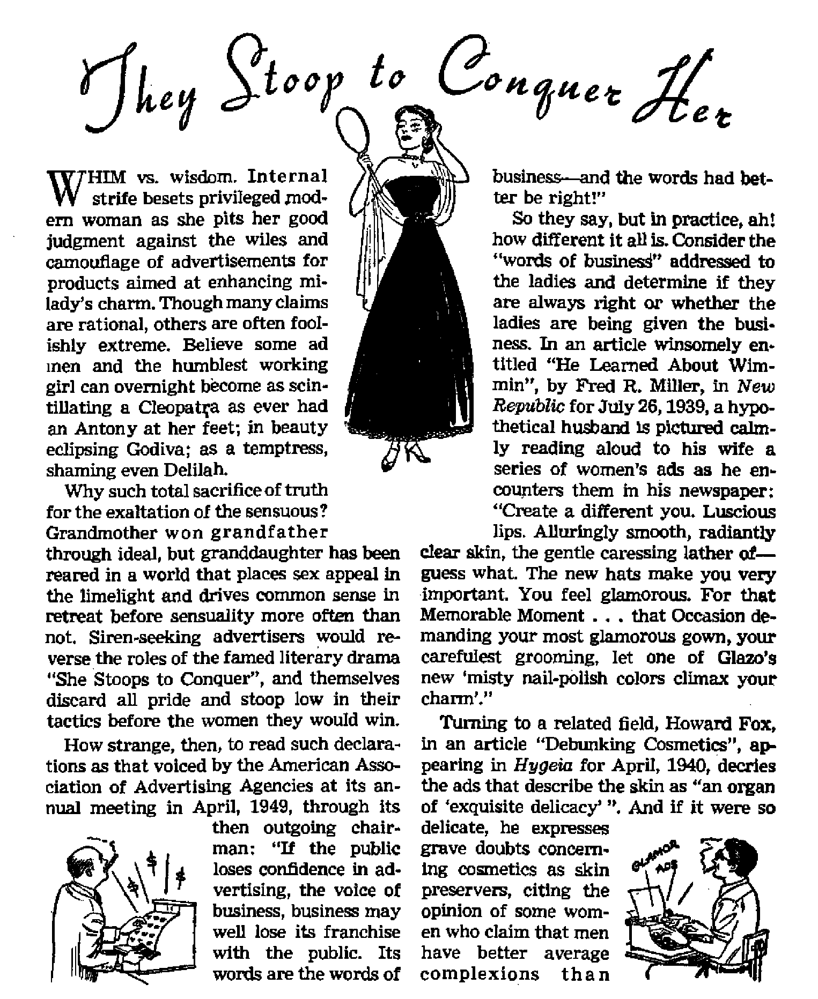

CHILDREN—DO THEY BELONG TO PARENTS OR TO THE STATE? Analysis of the Chicago Labrenz case involving Jehovah’s witnesses and blood transfusion
Corruption riddles college athletics
Glamor ads go after ladies’ vanity
Within the reach if within the heart
MAY 22, 1951 semimonthly
the mission of this journal
News source* that are able to keep you awake to the vital Usue* of our time* must be unfettered by ctnaorshlp and aeJfiah interest*. “Awake!” has no £etter». ft recognize* facts, frees facts, Is free to publish facts. It is not bound by political ambitions or obligations; it Is unhampered by advertisers whose toes must not be trodden on; it is unprejudiced by traditional creeds. This journal keeps itself free that it may speak freely to you. But it does not abuse its freedom. It maintains integrity to truth.
"Awake P* uses the regular news channels, but is not dependent on them. Its own correspondents are on all continents, in scores of nations. From the four corners of the earth their uncensored, on-the*scenes reports come to you through these columns. This journal's viewpoint is not narrow, but is international. It is read in many nations, in many languages, by persons of all ages. Through its pages many fields of knowledge pas* in review—government, commerce, religion, history, geography, science, social conditions, natural wonders—why, its coverage is as broad as the earth and as high the heavens.
“Awake!” pledges itself to righteous principles, to exposing hidden foes and subtle dangers, to championing freedom for all, to comforting mourners and strengthening those disheartened by the failures of a delinquent world, reflecting surfe hope for the establishment of a righteous New World.
Get acquainted with “Awake!” Keep awake by reading "Awake!”
COM
Published Semimonthly By WATCHTOWER BIBLE AND TRACT SOCIETY, INC.
117 Adams Street
N. H. Knorr, President
Printing thia issue: 870,000
Laniiag«> Is which thh magailm h tibllthei: Hfmtmontfaly—AlrlKams, English, Finnish. German, Norwegian, Spanish. Monthly—Danish, Fraich, Grwk, Portuguese, SwedlaU Ukrainian.
Offices Yearly subscription Bate
AmiriuL, U.S.. LIT Adams 6t„ Brooklyn 1, N.Y. Jl Antra Ila, IL Beresford Rd., Strathfield, N.S.W. Sa CMtaJa. 40 Irwin Are., Toronto 5, Ontario £1 tnglini, 34 Craven Terrace. London, W. 2 7b Soatt Africa, &28 Boston House, Capo Town 7s
Entered u seomd-class matter at Brooklyn, N. T.
Brooklyn 1, N. X.( U, S. A.
Grant Suiter, Secretary
Five cents a copy
A Mi I tt* MM should be sent to office in your country in compliance with regulaitMU to guarantee safe delivery of moftny, Remittances are accepted, at Brooklyn from countries where rm office la located, by international money order only. Sudscrlptloiu rates in different countries are here stated In local currency. Not Im of explritfon (with renewal blank) is sent at least two iwies bofore subscription expires. Change of AiidrMi when sent to our office may be eipettcd efleetlTj within one month. Send your old as well u new address.
Art of Marell 1879 Printed in U. fl, A.
Children—Do They Belong to
Futile Arguments to Evade God’s Law 3
Parents Look to Baby’s Eternal Welfare
Clergy Philosophers Void the Bible
Examining the Public’s Reaction
Light-Makers Older than Edison
The Highest Law Against Bribery
Build Up Your Weight and Health
"Your Word Is Truth**
Cultivating the Quality of Love
& “Now it is high time to awake.’—Romans 13:11 S)
Volume XXXII
Brooklyn, N. Y., May 22, 1951
Number 10 .
Can parental right* over their children be swept aside in a Hood of emotion? Can doctors prescribe medical treatment and give it, over parental objections? Can a court take children from parent* and hand them over to doctors for Just any medical or surgical treatment, say for an appendectomy, or an amputation, or a blood transfusion? Can doctors and courts override parental responsibility toward both children and God? And can they do all this without any legislation to give civil legality to their actions, and violate the Constitution? No, they can't do that. But in Chicago they did!
ON April 18 the state went to court in Chicago to take a child from its parents, in order that doctors might give the child a blood transfusion. The six-day-old baby, Cheryl Labrenz, was said to have a rare blood condition in which the red cells were being destroyed. If she did not get a transfusion she would die, said the doctors. The parents, Darrell and Rhoda Labrenz, are Jehovah's witnesses and view blood transfusion as a violation of God's law. The decision they faced was an extremely difficult one from the human standpoint, but with eyes fixed on God’s Word they opposed the transfusion. Why they did this, and why it will be to the blessing of themselves and their baby, this article will explain.
At Genesis 9:4 the command was given to Noah after the global flood: “Flesh with the life thereof, which is the blood thereof, shall ye not eat.” Centuries later the same command was made a part of the Mosaic Law, recorded at Leviticus 3:17 and 7:27: “Ye eat neither fat nor blood?' “Whatsoever soul it be that eateth any manner of blood, even that soul shall be cut off from his people.” It is repeated and enlarged upon in the seventeenth chapter of Leviticus:
"Whatsoever man there be of the house of Israel, or of the strangers that sojourn among you, that eateth any manner of blood; I will even set my face against that soul that eateth blood, and will cut him off from among his people. For the life of the flesh is in the blood: and I have given it to you upon the altar to make an atonement for your souls: . . . For It is the life of all flesh; the blood of it is for the life thereof: therefore I said unto the children of Israel, Ye shall eat the blood of no manner of flesh: for the life of all flesh is the blood thereof: whosoever eateth it shall be cut off,”—Vss. 10,11,14.
Futile Arguments to Evade God’s Law
Some will now argue as did a Jewish rabbi in Chicago, named Jacob Weinstein, who said concerning these texts quoted by Jehovah's witnesses: “Their interpretation of the verse is a misapplication of the law of the Bible. This verse refers only to the eating of animals.” Yet the texts quoted say “any manner of blood” and “blood of no manner of flesh”. If the blood of lower animals was so sacred, how much more so would human blood be’ David showed that this prohibition extended to human blood, for when three men got the thirsty David some drinking water at the peril of their lives he said: “My God forbid it me, that I should do this thing: shall I drink the blood of these men that have put their lives in jeopardy? for with the jeopardy of their lives they brought it.” So he refused to drink it. and poured it out upon the ground, as required in the case of blood. (1 Chronicles 11:17-19) From this it is apparent that David did not consider the restrictions about blood to be limited to animal blood and not applying to human blood.
Some may now raise objection and say that Christians today are not under the Mosaic Law, hence not under these restrictions concerning blood. That is true, but Genesis 9:4 above-quoted is no part of the Mosaic Law, and is still binding upon God’s servants. Moreover, this prohibition regarding blood was incorporated in the Christian Greek Scriptures, the so-called “New Testament”. When trying to determine the minimum requirements for Gentile Christians, the responsible ones at Jerusalem came to this conclusion, as voiced by the disciple James: “My decision is not to trouble those from the nations who are turning to God, but to write them to keep themselves free from things polluted by idols and from fornication and from what is killed without draining its blood and from blood.” So these bare essentials included the prohibition against blood.1 To these Gentile Christians they wrote: “The holy spirit and we ourselves have favored adding no further burden to you, except these necessary things, to keep yourselves free from things sacrificed to idols AND FROM BLOOD AND FROM THINGS KILLED WITHOUT DRAINING THEIR BLOOD and from fornication.” The early Christians stuck to this position, for almost ten years later the instruction still was that “they should keep themselves from what is sacrificed to idols as well as from blood AND WHAT IS KILLED WITHOUT DRAINING its blood and from fornication”.—Acts 15:19, 20, 28, 29; 21:25, New World Trans.
Others come forward to combat these arguments by saying that a blood transfusion is different from eating or drinking blood. This seems to be an attempt to evade God’s law on a technicality, and not a very impressive one at that. View the matter from the medical standpoint. When you are fed in a hospital in the regular way, you are eating through your mouth. When you are fed through the nose, you are eating in that forced or abnormal way. When you are given saline or sugar solutions in the veins, you are being fed intravenously. So the hospital may feed you through the mouth or nose or veins, and in any case it is feeding, and out of common-sense reasoning hospitals recognize it as such and call it such. The giver of nutrition may administer it into the mouth or nose or veins, and the receiver eats it, whether through mouth or nose or veins. The principle is the same in every case. So whether one eats congealed bloods in unbled meat, or drinks it at a slaughterhouse, or takes it by intravenous feeding at a hospital, it is still a violation of the divine restriction that forbids taking blood into the system.
Parents Look to Baby’s Eternal Welfare
Try as they will, whether by specious reasonings or emotional'floods and sentimental outbursts, opposers cannot sweep aside the Biblical prohibitions on the use of blood. Hence it was that neither by argument nor by threat of court action were doctors or orthodox clergymen able to sway Mr. and Mrs. Labrenz from their Scriptural position. Nor was the pressure of public opinion against them able to cave them in. Even human love for their newly bom daughter would not make them abandon God’s law. To those trying to make him give in to the transfusion Mr. Labrenz said: “I can’t change, I can’t! There is nothing I can do about it. If anything happened to my wife or myself it would be the same.”
And what did the mother have to say? At home before the hearing in court, Rhoda Labrenz said; “Of course I want my baby to live. And I pray that she does. I’ve always wanted a little girl. But we can’t break Jehovah's law. He gave us these commands. He told us if we follow them, we will live. If we do not, he will cast us off. We believe it is more important to carry out his commands than to deliberately break them by giving my baby blood. If my baby dies, I’ll feel sorrow. But it would be bearable because of my beliefs. Perhaps God would be using her as a witness. If she died she would have a chance for the new earth, but if we broke Jehovah’s laws we feel we will lose not only our chance, but the baby’s, for the new earth. We’ll fight against a transfusion as far as we can —in the Family Court, too. But if they take Cheryl Lynn out of our hands and give her a transfusion, our consciences will be clear.”—C h i c a g o Herald-American, April 18, 1951.
This statement of a greatly troubled mother should open our minds to another aspect of this matter. Many may hastily conclude that these parents are religious fanatics and in their fanaticism care not whom they hurt, even to the point of allowing their baby daughter to die. But this mother and father are not heartless, are not thinking just of their own religious consciences, and, above all, they are not ignoring the eternal welfare of their baby daughter. The very difficulty and heartache this decision must have caused the parents should impress us with their reasons, should make us study over the Biblical precepts that governed their hard decision. The mother’s statement above-quoted embraces the factor none should overlook, and that is the baby’s eternal welfare.
Eternal Life in a New Earth
Jehovah promises a new heavens and new earth, as stated at Isaiah 65:17-25, 2 Peter 3:3-13 and Revelation 21:1-4. By reading these and other texts you will see that these new heavens and new earth are not literal heavenly expanses and earthly planet, but refer to the reign of Christ’s invisible heavenly1 kingdom over a new organization of human creatures on this beautified earth. Jehovah’s battle of Armageddon will then have swept all wicked men and governments into oblivion. Those who die faithful to God will be resurrected to live eternally in that new earth arrangement, whereas those who break His laws will perish and never be resurrected. So it was with this farsighted view of possibilities of eternal life in mind that Rhoda Labrenz said what she did. The Scriptures show that in divine judgment periods such as our day babes share the fate of their parents, either for good or for bad. Faithful parents open the way to life for their as yet unresponsible offspring, Stated bluntly, better to die now maintaining integrity and later be resurrected than to compromise now and live for a brief time, only to be dead forever later on. That is what Jesus meant when he said:
“If anyone wants to come after me, let him disown himself and pick up his torture stake and follow me continually. For whoever wants to save his soul will lose it; but whoever loses his soul for the sake of me and the good news will save it. Really, of what benefit Is it for a man to gain the whole world and to forfeit his soul? What, really, would a man give in exchange for his soul? For whoever becomes ashamed of me and my words in this adulterous and sinful generation, the Son of man will also be ashamed of him when he arrives in the glory of his Father with the holy angels.” —Mark 8:34-38, New World Trans.
Clergy Philosophers Void the Bible
But despite the godly devotion of the parents that made them take this course of integrity, public reaction ran strong against them in particular and against Jehovah’s witnesses in general. Throughout it all, however, we are pleased to say that all of the reports in the public press that came to our notice were fair, presenting the position of the parents without any show of prejudice or distortion. The only press comments that came to our notice that betrayed prejudice were published reactions of some Chicago clergymen. Mention has already been made of the Jewish rabbi’s charge that Jehovah’s witnesses misapply the Scriptures, and that charge has been refuted.
Clinton Cox, Presbyterian pastor, and Kermit Long and George Fowler, both Methodist ministers, made statements along with thfe rabbi’s and all were published in the Chicago Herald-American of April 18,1951, under the headline “Church Leaders Condemn Blood Ban to Dying Child”, None of them quoted any scripture to sustain their judgment of condemnation. Cox asserted: “We have a right to save a life, give a life and protect a life at the cost of a life. But in this particular case it is not costing a life, but saving one.” Lives are not saved eternally by violating God's law. In this case, parental disobedience could save no lives and could lose four—the two parents, the baby, and another child, 21-month-old Kit. Anyway, should a Presbyterian that has real faith be overly concerned? Do they not believe that infants who die immediately go to heaven? By prolonging imperfect baby lives to grow up in this sordid old world only delays a blissful heavenly existence, does it not? Moreover, according to Presbyterian teaching the baby saved to human life might turn bad when grown and eventually die and go to eternal torment in hell-fire. Fortunately, Presbyterian beliefs are not Scriptural.—Ecclesiastes 9:5,10; Ezekiel 18:4; Romans 6:23.
Methodist Long emoted: “What more wonderful use of blood could there be than to use it to save human life? Surely this is in keeping with our Master who went about healing human beings.” In Jesus’ healing work on earth he did not use his blood. He did not give blood transfusions to perform his miracles of healing. He restricted the use of his blood to the divine purpose, to make atonement for inherently sinful but obedient mankind, as foreshadowed by the typical animal sacrifices and explained by the previously quoted Leviticus 17:10,11,14. “Unless blood is poured out no forgiveness takes place.” (Hebrews 9:22, New World Trans.) Jesus poured his out as a ransom price, not as a transfusion.
Putting Science Before God
The other Methodist minister, Fowler, stooped to ridicule, and made himself ridiculous. He said: “Theirs is a benighted attitude for this day and generation. There is no rational possibility for quoting the Bible concerning so cruel an act as to deny this child the benefit of medical science. God has guided men of science and blessed them with marvelous discoveries to protect and prolong life. You cannot quote the Bible to justify defiance of God’s beneficence to mankind. He expects his children to avail themselves of his blessings. The act of denial of scientific help, although it involves blood, is stupid and challenges God and his mercy?*
Obviously, this man is more of a disciple of science than of God. Apparently he is blinded by its glitter. Are not killing diseases on the increase, such as cancer and heart trouble? Is mental illness rising or falling? When a supposed cure is found for one disease two more diseases pop up in its place. Civilization seems to have bred disease, and science is not winning the war on the disease front. But maybe Fowler had something else in mind when he said “God has guided men of science and blessed them with marvelous discoveries to protect and prolong life*’. Science gave us guns and tanks, warplanes and TNT bombs, germ bombs and atom bombs, and may soon bless us with the hydrogen bomb "to protect and prolong life”. No, God is not in league with science and using it as a savior, and it is not defying God’s goodness to obey his law on blood that angers scientists, most of whom scoff at the Bible anyway. Finally* since Fowler is so upset by "cruel acts**, how does he feel about the unscriptural eternal torment doctrine of the Methodists that paints God as a fiend that burns men forever in a lake of fire? How stupid is that pagan superstition, and how challenging is it to God's mercy?
These men set themselves up as expert testifiers on Bible matters, but the unscriptural teachings of their orthodox religious churches unseat them. They neither refuted with scriptures the position of Jehovah's witnesses nor established their position on the rock foundation of God’s Word. They tag along with the world and its ways, believing what seems expedient at the moment, remaining popular with the masses and compromising and watering down and even scuttling the Bible to retain their respected and influential position in the eyes of "this present evil world” whose god is Satan. They have their reward, right now.
(Galatians 1:4; 2 Corinthians 4:4; Matthew 6:5) We cannot help but think of the case of Job. He lost his possessions, his ten children, his wife's loyalty, and his own health. He drew near to death, and suffered so that he longed for it All because he maintained his integrity toward God. In the throes of this trying time he had to listen to the twisted and distorted religious views of three false comforters, who said he suffered not because of his integrity toward God but because of his erroneous views, and which suffering was brought upon him by God. They were shown up false.
Examining the Public^ Reaction
In this Labrenz case, the people generally rose up in indignation against Jehovah's witnesses. In honest analysis, are they consistent? Is it really a baby’s life that touches them so deeply, or is it the light in which it has been dramatized? Reflect. In this democracy the people are the government India needs grain. This country has it, more than it can use, enough for India's starving millions, India has needed it for a long time. Why have shipments been so long delayed? Because India must be made to swing far from the Communist orbit and into the United States orbit. And while this political bargaining was being indulged, how many lives do you think ended in starvation? How many of them could have been saved by prompt relief shipments? And how many of the dead do you think were babies only a few days old? But is the general public protesting?
Nations today engage in wars. Older persons finance them. Their sons and daughters go to the battle fronts to fight them. The masses generally feel they are necessary. The shells and bombs fall on soldier and civilian alike. Razed cities are filled with the stench of the dead. How many of those dead were women? how many children? how many babies, some maybe six days old? Just how deep and grievous Is the sorrow for all this felt by persons individually, so long as death does not claim someone very close to them? If this transfusion issue has raised such protest over one baby, would you not expect the slaughter of millions to increase the protest a millionfold? Also remember, if obedience to the nation’s declaration of war seems vital to you for political reasons, Obedience to God’s declaration concerning blood is vital to Jehovah’s witnesses for godly reasons. If you are willing to see your sons die for national reasons, may not Jehovah’s witnesses allow theirs to die if necessary for godly reasons that will work out for the eternal life of both themselves and their children? Be reasonable. Be honest. Be understanding. You can see your own viewpoint easily. Try to see another’s.
When this issue broke in the public press, many persons who had Jehovah’s witnesses in their homes weekly for Bible studies canceled these studies, and this without even allowing explanations. This is to be regretted, but no *cause for disturbance on the part of Jehovah’s witnesses. The people are now being divided, as a shepherd divides the sheep from the goats. Many are separated to the goat class because of ex* posure of the trinity doctrine’s falseness, or the error of the eternal torment teaching, or by the felling of some other long-cherished religious belief of their orthodox churches. Others are separated because of highly sensational issues such as this one concerning a blood transfusion for a baby. Whether for one or another reason, the people are being divided, and that is the divine work now to be done. What the particular point is that does the dividing of different ones is not important. The issue is Bible truth. Do you really believe it and apply it, not just when it is easy but specially when it becomes hard and a sore testing? Are you a Christian only in fair weather, giving lip-service to the Bible but capitulating when the test becomes stormy and severe? Your course will determine whether you are Christian in name only or Christian in deed as well—Matthew 7:21; James 1:22.
Medical Tyranny Exposed!
On the matter of blood transfusion, Jehovah’s witnesses will not change. In a choice between God and science, they will choose God and his Word. Those who wish to do so are free to bow down to medical science as though it were some infallible god, but Jehovah’s witnesses will refrain. In our opening paragraph we stated concerning Cheryl Lynn Labrenz: "If she did not get a transfusion she would die, said the doctors.” “Said the doctors” was deliberately put there. They are always making sweeping statements, telling people how long they have to live, frightening patients into conforming to their remedies. Their mistakes help fill cemeteries, though the graves cover them over. Certainly doctors do much good, but we are not ready to hail them as infallible and bow to their every edict. The patient or patient’s parents may still choose their own medicine.
With these points in mind, digest the following. Dr. Bowman of Bethany Hospital was Rhoda Labrenz’ doctor during pregnancy, but just before she entered the hospital he went on vacation. On his return the day after the forced transfusion Darrell Labrenz visited him, and in a letter to the Watchtower Society Labrenz reported: “He told me that he did not think the baby needed a transfusion, and that out of the 4,000 babies he has personally delivered he never lost one baby from the Rh factor. He said the doctors were making too much of a fuss over the entire situation and were transfusing blood too freely, and that he personally did not believe in blood transfusions for this type of case. I asked him just exactly what to do in a case like this, and
(Continued on page 28)
woman. From a trade journal of the cosmetic industry, Mr. Fox quotes the following blow to the morale of those whd may fondly hope there is some shred of truth to the promises the would-be skin-glorifiers make through their ads:
“We know from personal experience that some of the best products in the trade are made by concerns which are not big-scale advertisers. We also know that some of the firms that do a lot of advertising have no technical background whatever. Some of them never employed a chemist of any description. So what are the advertising agencies going to say to women who follow their advice and then find that not all nationally advertised cosmetics are so hot?"
'Sweet Nothings* from the Perfumers
But if the foregoing examples have provoked the ridiculous, the perfume advertisements have let the monster out of its cage in full, unleashed fury to prey upon its victims. In what appears to be an offer of sorcery to the younger girls at sweet sixteen and to the more mature women, relative powers of glamor, the salesmen of scent have counted heavily with American womankind through “secret formulas", with such intriguing names as Frenzy, Danger, Innuendo, Shocking, Scandal, Mistress of the Night, Menace, My Sin, Intoxication, Whirlwind, Tailspin, Tigress, Indiscreet, Possession, Cobra, L’Ardente Nuit, RisquA, Tabu, Chichi, etc.
This is only the beginning. Claims and promises to match these nearly matchless names have flowed by the oceans-full. Westbrook Pegler was moved, a few years back, to write a column about such perfumes designed “for sorcery and sweet danger . . . ever more dazzling, more tempestuous by night ... for a magic hour of unfettered joy". He marveled at “the perfume that whispers ‘Love me’ ” and the one promising “to quicken the pulse and lift the heart”. Following the late war, American ladies welcomed back their soldier husbands and flancgs amid the entrancing new aroma of “GriGri", the perfume designed to “replace . * . the blockbuster and the robot bomb" with “a dash of the inconsequential”.
For some unknown reason, the element of sin has become a popular accessory to perfume ads. The brand called “My Sin" likes to portray a large black cat with the simple phrase beneath the illustration: “My Sin ... a most provocative perfume!” But in order to make sin popular, it must be imported. In this regard, says Thomas Whiteside, in his article, “Seduction, Incorporated,” New Republic, January 20, 1947: “Many perfume advertisers, however, have cleverly taken care of this matter by presenting sin as a French phenomenon, very fashionable, importable, and therefore desirable. Thus an ad for Muse remarks: 'They are saying in Paris - . . Who wears Muse shares the secrets of the goddesses/ ”
Further observations by Mr. Whiteside concerning some of the mysterious perfume approaches prove of interest. He discovered White Shoulder perfume displaying a lightly clad young lady over whom hovered d pair of masculine hands while making the declaration, “Potent essence of desire to touch.” One brand promised to drop a bombshell into every man's heart, another to create a mist of “deliberate provocativeness” in which its wearer would move. One was a little vague, “mysterious as your mood," another very specific, “sensuous as the beat of a tomtom,” and still another, called “Jealousy”, claimed to pose a veritable "challenge to conquest”.
Those desiring relief from these practices are doomed to apparent disappointment, for, concluded Mr. Whiteside: "I went to an executive of one of our largest
advertising agencies and asked for his thoughts on future trends In perfume advertising. ‘Sex/ he replied, ‘and more sex/ **
Thus, while moderation in these things undeniably produces a good result, their overuse can be similar to overindulgence in food or drink, drowning the real woman in exotic odors and burying her beneath pancakes of make-up. To bring her out, some have turned to charm schools, acquiring bodily grace or learning the secret of popularity through clever conversation.
But neither is this the answer. Through a prominent ladies’ magazine, a man lists the things he admires about his wife after ten years of marriage. These include her speaking voice, courtesy, good companionship, dignity, tolerance, common-sense intelligence, individuality, courage, respect for her husband’s masculine ego, resourcefulness and affection. Carefully studied, women will find nothing here that the average member of their sex cannot cultivate, whether or not they can afford excessive make-up budgets, imported ‘odors fresh from the goddesses* or enrollment in a charm school.
The “Good Wife”
Wise women, too, can discern the values that truly matter. They can see that the attainment of physical allure alone leaves the weightier matters still to be gained: approval by God, love by family, and respect by outside associates and acquaintances. The present world of vanity and puffed-up self-esteem is even now passing away rapidly. Said the last living of Christ’s twelve apostles at the close of the first century : “Everything in the world—the desire of the flesh and the desire of the eyes and the showy display of one’s means of life— does not originate with the Father, but riginates with the world. Furthermore, the world is passing away and so is its desire, but he that does the will of God re
mains forever/’—1 John 2:16,17, New World Trans.
That is why Christian women today are more busily engaged in cultivating the lasting qualities, perfecting their praise of God, and assisting their families to do likewise. Note |iow King Lemuel describes the worthy wife in the book of inspired Proverbs, a wife who is of profit to her husband both physically and spiritually:
“If one can find a good wife, she is worth far more than corals. Her husband puts his trust in her, and finds no lack of gain. She brings him good, and not harm, all the days of his life. . . . She rises while it is still night, and gives her household food, . . * She perceives that her work is profitable, so. her lamp goes not out at night.... She is clothed with strength and dignity, and she laughs at the days to come. She opens her mouth in wisdom, and kindly counsel is on her tongue. She looks well after her household, and eats not the bread of idleness. Her children rise up, and bless her— her husband also, and praises her: ‘Many women have done well, but you have excelled them all/ ”—Proverbs 31:10-29, An Amer. Trans.
Sensible women will seek these lofty standards without waiting for a perverted, dying world to approve and emphasize them. While not prudishly abstaining from whatever beauty aids they may desire or find within their means, neither will they bemoan their loss when not able to heed every exotic advertisement. Despite all of one’s natural attractiveness and the acquired charms that the individual may add thereto, wise King Lemuel's conclusion to his observations above reflects the wisdom of the Lord God: “Charms are deceptive, and beauty is a breath; but a woman who reveres the Lord—she will be praised. Give her the due reward of her work; and let her deeds bring her praise at the gates.” —Proverbs 31:30,31, An Amer. Trans.
The Festival of Britain
By "Awokol'’ corrttpondant in Britain
"THIS year, Great Britain, and particularly ■ London, have two separate and distinct attractions to lure the world traveler. Is he a member of that New World society which pins Its hopes in the kingdom of God ? Then he would wish to be ih London August 1 through 5 to attend the convention of Jehovah’s wib nesses at Wembly Stadium. And as regards other world travelers? For them the attraction will be the Festival of Britain held from May to September.
<LAnd pray, what will this Festival of Britain be like? To quote from a Ministry of Education publication: “The Festival of Britain has been planned to tell the story of British contributions to civilization, partly by a number of national displays, in which the arts, science, architecture and industry will be exhibited, and partly by local activities io which it is hoped as many people as possible will contribute. The scope of the festival is nationwide and includes activities in England, Wales, Scotland and Northern Ireland.” It will be held in commemoration of the centenary of the great Crystal Palace exhibition held during the days of Queen Victoria.
< While the festival will thus include- a host of varied exhibitions, the most visited doubtless will be the “South Bank Exhibition” in London, so named because of its location on the south bank of the River Thames in the great curve which the river makes between the Waterloo and Westminster bridges. Says the government prospectus: “Visitors to the South Bank Exhibition will have the first opportunity in the world of aiming at the moon—and hitting it . , , It will be possible to direct a signal to the moon and within the space of 4i seconds see on a radar screen the proof that it has hit the target and rebounded to earth where you are. The Dome of Discovery, from which these signals will be sent, is the largest unsupported structure of its kind, 365 feet across. A few minutes by water taxi up the Thames takes one to the Festival Pleasure Gardens at Battersea park. Here visitors will see acres of well-laid gardens to give nature lovers a respite from the
Inoise and bustle of the city. Alongside these gardens will be the enormous Fun Fair.
A Festival of Britain in these days of British austerity, when Britain is scraping the bottom of her economic barrel to rearm? Inviting hundreds of thousands of guests when the cupboard was never so bare? Invite so many, with hotels already overcrowded and an acute housing shortage? Spend nine million pounds on a festival when that money could be spent to so much better advantage in relieving the housing shortage?
CFor every one of the questions and objections the labor government has had an answer, They would make it somehow; and, besides, think of the many dollars that visitors will bring, and the shot in the arm that it will give the British themselves! True, things looked a lot more favorable when, this thing was first projected back in 1545 than ; they do right now, but, really, it’s too late to !• scrap the thing now, so let’s go ahead with ■; it, eh what? Such seems to be the attitude. > <1 And there are other problems. Labor trou-1 ble has been such as to almost delay its open-;• ing. What kind of music is to be played, only • : British or also foreign? and will it be open : Sundays? A compromise was reached regard! ing the latter. At Battersea park the gardens ;► will be open on Sundays but the Fun Fair <; alongside it will not.
; C According to the New York Times, Sir I Thomas Beecham, who is leading the campaign in the public press for only British music at the festival, described the whole festival idea as a "monumental iniquity3’.
< To what extent the Festival of Britain will live up to the expectations of the world traveler visiting it, and to what extent he will agree ; with Sir Thomas Beecham remains to be I seen; and may not in small part depend upon himself. Of one thing, however, you may be certain, that if past conventions of Jehovah’s , witnesses are any criterion, then those world travelers who go to London to attend the assembly at Wembly Stadium, August 1 through 5, will have no regrets. It will have Sbeen more than worth their while from every standpoint
Animals That Needed No Electricians to Match Man's “Great White Ways”
O MAN’S mind light and life walk hand in hand. The sun, his greatest known light, man has imitated on limited scales to provide his own artificial illumination. Combining the fundamental wonderful powers within natural creations with the mechanical ability of an advanced scientific era, the great luminous signs and displays of this day provide a fitting birthmark to science’s “brain age” in adorning it with an “enlightenment” entirely physical and superficial.
But man did not create light, not even earthly light originating on this planet. Rather, his wisest scientists have been repeatedly in wonder at the discoveries of light bearers among humble forms of animal life, creatures that produce light from within their own bodies. They yet excite greater amazement than Edison ever did with his electric light. West Indian visitors have delighted to the Cucujus beetle sporting two brilliant eyelike organs producing a greenish light and an orange luminescent organ on the first abdominal segment. In flight this insect is likened by witnesses to a miniature shooting star. Native girls have appropriated one of the world’s most unique hair decorations by the attachment of this shining addition to their “crowning glory”. Sometimes at night they tie them to their feet as illumination of the path before them.
South America makes a colorful contribution in the rare beetle larva often called the “railway bug”. Sometimes as long as two inches, this sparkler wears a glowing red headlight and rows of green lights along its sides. Live specimens have been seen that glowed constantly for several weeks.
Readers never outside the Northern Hemisphere will know the glories of the fireflies. Their fireworks from May to July rank with nature’s major spectacles. Firefly festivals form a part of Japanese tradition, featured by merrymaking and a “flying circus” staged by the luminous little aviators. The obvious method to firefly flashing has been made evident by its synchronous harmony among large groups of the insects, especially in tropical Siam, Burma, Malayasia, the Philippines and East Indies. Of the Siamese firefly and its attraction toward favorite trees in ‘countless multitudes’, Sir John Bowring is quoted in the book Living Light, by E. Newton Harvey, as follows: “At one moment every leaf and branch appears decorated with diamondlike fire; and soon there is darkness, to be again succeeded by flashes from innumerable lamps which whirl about in rapid agitation.” What a show! Had these creatures but the power of reason how they would have surely been amused with man's tardiness in perfecting artificial light for his uses. Harvey sets the firefly flash rate at 100 to 120 per second and cites proof of their ability to put on nightly performances for months on end with the lone exception of brightly moonlit nights.
Close to the firefly is its less brilliant relative, the glowworm, described by one writer as possessed of an “unearthly halo”. Surprisingly enough, luminescence has also been discovered among reptiles. In his book Caribbean TreasureIvan T. Sanderson relates his discovery of a luminous lizard in Trinidad. From within a small crevice he glimpsed a dim light just going out. Spying a lizard within, the author reached in and tickled the creature. At once it turned its head and both its sides lit up. He pulled it forth and dangled a brightly lit reptile by the tail.
Lighting the Natural Torches
Do you ask now how this phenomenon in nature comes about, how these natural torches are ignited? Well, organs for the production of light are just as possible as those of sight, speech and hearing. For a detailed picture of light-producing organs, look for a moment into the interior of the brilliant firefly. Two sets of cells, several layers deep, one on the back, one abdominal, are found. The abdominal cells are the light producers and the dorsal cells, or those on the back, are the reflectors. The light-producing, or photogenic, cells contain granules of a light-emitting substance called luciferin and are divided into groups by trunks from the windpipe, thus assuring an ample oxygen supply. The dorsal layer's cells contain tiny crystals of a purim base providing a white background for the light. In general, the theory of light production requires that the oxidizable granule be contacted by air in the presence of an enzyme called luciferase, to hasten the oxidation. Light flashes result and protective transparent lenses in the animal serving as “portholes” emit the light to the outside world. Some light-makers wear their light on the outside, in which cases the granules are contained in various forms of glands and light is produced when the granules are given off in secretions.
There is, however, a purely secondary form of luminescence which is responsible for the light' of some animals not luminescent in themselves. When on the ocean you may notice at times an apparent “burning” of the waters. This phosphorous glow is often attributable to multitudes of microscopic bacteria capable of luminescence. When such bacteria infect a non-luminous animal they can produce in that animal a glow detectable from without. Especially interesting are two flsh of the East Indies that are equipped with light organs below the eye and which organs are capable of growing luminous bacteria. The tide of discussion has now fittingly led us to other light-bearing citizens of the sea.
Light in the Depths
Sea-going passengers have frequently observed from ship at night great sparkling balls of light on the water’s surface. This was probably a party of jellyfish in evening dress. Some form of direct stimulus of either a mechanical, chemical or electrical nature is necessary to provoke the jellyfish to light up. This is one of nature's electrical signboards wearing light as an external garment, which can be proved by rubbing the creature gently with the fingers. As light appears the fingers may be withdrawn and will be found to remain luminous almost as long as the jellyfish itself. The light-possessing luciferin is secreted through glands to contact oxygen in the sea water with the beautiful light-yielding result Besides these great basketballs of light, seamen have been treated to long streamers of light in the water, left by the trail of playful porpoises or of twelve-to-sixteen-foot “man-eating” sharks.
Though not always so spectacular as this, all light producers do have their gift of glamor. Sea pens and sea pansies, very simple animal forms dwelling on the ocean floors, are relatives of the jellyfish, with the same luminous traits. A sea pen near Japan is known to rise erect at night after a day of groveling on its “face”. In its splendor it then emits a luminous slime from its outer surface.
Even some lowly marine worms, humblest of Neptune’s peasants, rise, Cinderella-like, to moments of glory with their light displays. For example, the terebellids. Their bodies lie hidden in sand or mud, but long tentacles protrude over the floor above in search of tiny organisms that may wander within reach of the trap. If troubled these worms may discharge flashes of violet light along each tentacle. Even more singular is the lot of the worm known as Chaetopterus. It constructs a tissuelike tunnel with open ends, periscopelike, above the sand, while it is content to dwell inside and await the arrival of any food prospects. Ironically, this animal is highly luminous, but it remains entirely secluded, its light ‘hidden under a bushel’ as it were with none but itself to enjoy it. Even more futile is the brilliance of the rock clam, Pholas, of the Mediterranean. It lives in mud or soft rock, never moves around and cannot even see, so that none benefit from its strong light, not even Pholas! One small deepwater Mediterranean squid produces a luminous secretion that completely envelops the owner in a cloud of fire. The depth-dwelling angler fish is equipped with a long filament protruding from its foreparts, at the end of which hangs a lure of other tiny filaments. These lures of some anglers are luminescent, perhaps an aid in attracting smaller living creatures for food. Finally, mention should be made of California’s “singing fish”, which may possess nearly 800 light organs in its sides. At least forty animal orders are said to contain one or more light producers. Need they be envious of the “great white ways” made possible by Edison and his successors? Hardly.
“Enlightened” Courtships
Do you wonder what additional practical purpose the light may serve its ownerfe? Observers believe that deep-sea fish may use their lights as signal flares to their schools for the sake of preserving their ranks. But a far more widely recognized use is found by all authorities in the light’s relation to sex activity. Watch how a gentleman firefly strikes up an introduction with a respectable lady firefly. At dusk they are out. The female, who is sometimes wingless, will remain in the grass and a male above will send out a flash. Taking a “shine” to him, milady responds with a similar luminous dot-and-dash communication. It is pointed out that within five to ten flashes the pairs have found each other and a match is made. They literally ‘carry a torch for one another’. With glowworms, the female far outshines the male, whose only light is at the end of his body. In putting on her glowworm “make-up” the girl lights up the underside of all three end segments. How she can then dazzle her beau! The female marine fireworm rises to the surface during mating season and turns on a bright display. The male, bearing a much dimmer light, is especially attracted toward any light at this time, hence the brilliant glow of his mate-to-be is sure to succeed in completing another happy union. The midshipman fish is also specifically cited for luminescence in connection with sex activity.
One final feature concerning luminescent animals remains of deserving importance to mention. In Living Light, Harvey exclaims: “Apparently there is no rhyme or reason in the distribution of luminescence throughout the plant or animal kingdom. ... It is an extraordinary fact that one species in a genus may be luminous and another closely allied species contain no trace of luminosity. There seems to have been no development of lu~ minority along direct evolutionary lines, although a more or less definite series of gradations with increasing structural complexity may be traced among the forms with highly developed luminous organs.”
How truel Other authorities verify Harvey's findings here, and though some diehard evolution exponents seem so surprised whenever accurate scientific research only supports the Bible’s truthful and scientific account of creation, still, for all the wonder and excitement, there is the simple truth. Some creatures on higher life plateaus may indeed possess greater "structural complexity’; others may be very simply made. But all of them possess no development not provided for by the infinite wisdom of their Great Creator, to whom their every light flash is known and whose spirit moving over the face of primitive earth’s land and waters gave life to all that is.
• The animal world is as apt as man to stumble onto a potent beverage that proves much easier to take than to leave. The results are vividly depicted for us by Paul Steiner, writing in the New York Times on May 7, 1950;
• “Cows. When his cows continued coming in from pasture so drunk that they had to be milked lying down, a farmer near Vancouver, called in a supervisor of the local cowtesting association. His diagnosis was that the cows had eaten fallen apples which had fermented.
• “Squirrel. In Geneva, Switzerland, a Woman found a squirrel lying on a bed in her villa. First thinking it was dead, she later discovered it breathing. Then she noticed that a large box of liqueur chocolates on her dressing table was empty. The squirrel sobered dp later in the day and made off with a slight hiccup.
9 “Pig. In Tulsa, Oklahoma, sheriff’s deputies watched a drunken pig lurch down the street. They followed it straight to the drainpipe of a still.
• “Ducks. Whitehall, New York, citizens observed dozens of tame ducks staggering about the streets and quacking off-key. It was all the result of an accident—a beer truck had crashed and the ducks had received their first taste of an intoxicating beverage out of the broken bottles.
9 “Mouse. In Galesburg, Illinois, a police station custodian found a mouse reposing happily in a near-empty whisky bottle. The rodent had grown so big, living on whisky after crawling in, that it could not get out again. When the custodian broke the bottle to release the mouse, it tried to run out, but collapsed In a drunken stupor.
• “Bear. In the Tennessee hills there lives a bear which seems to know bad whiskey when he tastes it. While Alcohol Tax Unit agents were waiting to trap the owner qf a still they had just found, the bear lumbered out of the forest and decided to sample the product. He rolled it around his tongue and then smashed the still to pieces. Their evidence destroyed, the revenue men went home.
• "Rats. A Berkeley, California, exterminator announced his remarkable success Ln catching rats by feeding them frozen pudding flavored with sherry He gets the rats so drunk that he can catch them with his bare hands, he says.
9 “Rabbits. The rum-and-brandy method of catching Is being used in New South Wales, where rabbits are made drunk and then gathered up.”
Corruption Riddles College Athletics
SO TRUE is the Bible saying, “For the love of money is a root of all sorts
of injurious things?1 (1 Timothy 6:10, New World Trans.) Think of how the greed and selfish gain symbolized by the uncontrolled 'love of money’ have affected human history; how they have corrupted, wrecked and destroyed. The modem reader^need only consider the far-reaching effects of the recently exposed basketball bribes and attempted bribes in New York and Los Angeles.
This scandal, breaking out in the midst of the very sacred circle of American morals, the field of sports, was like a mortal blow to this society's vitals. The air was at once filled by vows from aroused law enforcement agencies that offenders, particularly those offering the bribes, would be harshly punished. Colleges donned sackcloth and ashes and spoke of returning sports to the campus or even of dropping intercollegiate competition altogether. As a final great gesture, the National Education Association on February 18, 1951, released a 100-page statement composed by some twenty members, leading American educators, pleading for “moral reconstruction” and for “moral and spiritual values in the public schools”. From the first Harvard-Yale boat race in 1852, intercollegiate athletics had been wreathed by American tradition in a halo of immunity from even the suspicion of wrong. The tide of criticism in recent years capped by such open shame exposed soiled garments on Society’s cherished prize. What had
happened?
Back in the mid-nineteenth century, intercollegiate athletics were on an informal basis, almost entirely the interest of participating classmen, restrained to the campuses involved. But with the increase of alumni, these former students took ever greater interest in directing talented athletes to their native campuses and to putting pressure on the school to hire “big name” coaches. This meant attractive “athletic scholarships” for the players and high salaries for the coaches. Since the public was expected to finance the venture, super stadiums came next to accommodate profitable crowds. The stadiums had to be paid for too, so winning teams had to keep coming through the mill to maintain “box office appeal”.
Thus it was that intercollegiate athletics, particularly the prominent sports such as football and basketball that “pay the freight” for the schools’ other sports of lesser public appeal, in a little time became a tremendous business enterprise. And how the paying customers musically clicked the turnstiles to view the stock in trade, fleet-footed ends and high-scoring halfbacks. The universities and colleges were in business to the hilt with the firm of “Touchdowns Incorporated”.
Enter the Villain
Through the turnstiles, too, came the eager gamblers, attracted by large stadiums and vast crowds as flies are,to a plate of honey. Naturally, their presence could produce only pollution, sooner or later reaching out to corrupt the athletes. In the meantime, how did the schools uphold the right principles and examples and protect the contestants? The answer is found in the reams written to indict the colleges’ touchdown industry as increasingly corrupt, in the current scandal, in the words of some of the educators themselves.
Following action of the board of trustees of American University, Washington, D.C., to drop football, the school’s president, Paul F. Douglass, was quoted by the National Education Association's Journal, in December, 1946, as referring to the recruiting of football players as “the biggest black market operation ever related to education”, and as “a human slave market extending from the Atlantic to the Pacific”, operated by “agents and scouts directed by coaches who receive salaries higher than university presidents”.
Richard L. Neuberger, in Collier’s of November 9, 1940, had testified to the “whopping salaries” of “coaches, athletic directors, graduate managers and all sorts of other satellites” connected with far western football. He referred to the efforts then under way by Pacific Coast schools to silence the charges of open proselyting and paying of players. The West had no monopoly on the practice. Ralph Cooper Hutchison, writing as president of Washington and Jefferson College, published an article in the college paper, later to appear in Reader’s Digest (December, 1940), in which he cited action taken by the Middle States Association of Secondary Schools and Colleges several years earlier to deny accredited standing to any institution continuing athletic scholarships. Each school was invited through its president to declare its own course relative to athletic subsidies or scholarships. Though he declared the East was filled with subsidized teams at the time, “yet every single college and university in the Middle States Association sent in a letter from the president stating that there was neither subsidizing nor athletic scholarships'” Delinquency breaks loose with the schools In the lead.
Further effects of the delinquency were once painted graphically by Westbrook Pegler, who said: ‘Tntercoilegiate football ♦ is dishonest from the president’s office down and an immoral influence on all concerned and especially on the players, because young men are hired, one way or another, to play as amateurs, knowing they are pros and knowing that the men of prestige, some of them clergymen, are hypocrites and casuistical cheats.”
Win! Win! Win!
One overpowering motive dominates the legendary “college spirit”: the team must win, win, win? The pressure to win rolls in from the alumni through the college officials and descends upon the shoulders of the coach, who must drive his team as if it were machinery on a production line. So widespread is this mania that it is virtually impossible to escape it in any university or college of size. During bad seasons, not only the coach, but frequently his family will feel the brunt of the sickening pressure to win—or else! In October, 1948, a magazine article appeared by the wife of Wisconsin’s coach in which she related the drastic pressure endured by their entire family during the 1946 season. Sarcasm, public and private, threatening telephone palls and cruel treatment of the children by their classmates were among the harsh measures used against them by a public all but insane with the win-at-all-costs mania.
All of this is hardly an atmosphere likely to develop respect for his education in the athlete’s mind. Said Roland L. Beck in School and Society of February 21, 1942, in consideration of the foregoing and of the long hours necessary to mold a winning team: "Usually the athlete is satisfied with a *C* and many are concerned only in making a passing grade. . . . When athletes and those in charge of student employment know the ‘job’ depends more on making the team than on doing the work, one should be able to understand why the athlete might expect the school to put principle aside again and give him passing grades too, as long as he can make the team.”
Through a fictitious dialogue between college football players, Renwick Kennedy, in The Christian Century^ December 6, 1950, crystallizes the setup for us:
" ‘Yeah/ Jack Holland, the left halfback, said, T guess Wellington was right. You win wars on the playing fields of Eton, he said, or something like that. I guess that’s the way it is. They teach you to win. That’s all that counts. They don’t care how you win. Nobody cares. You gotta win. If you have to kick a good guy in the face to do it, you gotta kick him in the face. If you gotta drop bombs on women and children, you gotta drop ’em. You gotta win. But I got enough of this bunk about football teachin' you fair play and bein’ good for your morals. Football belongs to the people who get money out of it, like college presidents and coaches and gamblers. All we get out of it is a chance at a diploma/
“Ed Gibson, a scholarly guard, spoke in approval. ‘Right. You are exactly right, Jack. Your language is exact. A chance at a diploma. Not a chance at an education. You can’fget it and play football, too. Maybe in the little colleges, but not in this league. There isn’t enough time for both. If you can find the time you’re too exhausted to read your books. They give me A’s but I don’t earn them. You can’t practice three hours in the afternoon and attend blackboard lectures two hours at night, fall and spring, and have any time left for an education. All I learn I learn in class, when I'm not too tired to stay awake.
But they give me A’s. Some day, after X get the diploma, I hope to educate myself?”
With the lust for gain so manifest about them and the ready offer of the gamblers available to the athlete who might not think himself sufficiently repaid for the tremendous profits he makes possible, the opportunity for temptation is evident. When some slip remorse is understandable, but from the colleges that had already played into the gamblers’ hands, it seems anticlimactic. Now they wag the finger of shame, but bribery was all right when the athletes were enticed by the school to enter that institution. Playing for pay was perfectly legal when masked by jobs-in-name-only as a righteous veneer. After distorting everything moral to the point of cheating on the youths’ educations and making them parties to hypocrisy and bribery, of what usfe are 100-page or even 1,000-page statements on moral values? Nor is this any defense of the actions of the youths caught in the web of the gamblers and bribers. It is only a reminder that bribery is indeed wrong under any conditions, when committed by gamblers, players or by universities.
The Highest Law Against Bribery
Yes, bribery is wrong, and for far higher reasons than just the shaky and inconsistent moral code fixed by human society. Long centuries ago, when Jehovah God guided his covenant people Israel, he spoke out through his earthly mouthpieces against bribery, calling it wrong not just when caught at it or when carried on by certain parties, but wrong at any time under any circumstances. At Job 15:34, we read: “For the godless are a barren tribe, and fire destroys the men who bribe; big with mischief, they bear mischief—disappointment—for themselves!” (Motfatf) It was thought quite as wrong when found a stock practice by the very sons of Judge
Samuel, who were accused of turning aside for bribe money and tampering with jus-tice. (1 Samuel 8:3) When the entire nation had turned so corrupt as to evoke constant warning by a succession of prophets, these men were moved to say: “I know your countless crimes, your manifold misdeeds—browbeating honest men, accepting bribes, defrauding the poor of justice.” And again: “Leaders of Jacob, listen to this, you judges over the house of Israel, who spurn at justice and twist equity, who build your Sion up with bloodshed and Jerusalem on crime, judges passing verdicts for a bribe, priests pattering oracles for pay, prophets divining for money, and all the * while relying on the Eternal, saying, ‘Surely the Eternal is among us; no evil can befall us’’”—Amos5:12;Micah 3:9-11, Moffatt.
Note how the warning and dissatisfaction were expressed toward the “leaders of Jacob” who were the ringleaders in vice and wrongdoing. They had led the whole nation into divine disfavor by their unwholesome practices. On a small scale or large, the pattern for delinquency is invariably the same: parental delinquency begets child delinquency; national delinquency ruins the people. Where the example is wrong, the general practice is bound to follow suit. The current sports scandal is simply another example of the same thing. For years the schools have, by their practice, transformed intercollegiate sports into commercial businesses. “How much respect do you think a football player really has for a school which has outbid six or seven other schools for his services?” asked a New York columnist during the heat of the basketball scandal. Answer came from one of the athletes who confessed to accepting a bribe: “It seems more of a business than a sport.” Though kept too busy on the athletic field to care properly for their studies, the players will nevertheless find themselves learning some things, by example. If the schools shamelessly buy their touchdowns, should any care if the touchdown-makers or basket-ringers take time out here and there for a little personal aggrandizement? Not moral, ethical, honest or even decent; no, but just as moral, ethical, honest and decent as the parent schools themselves.
tfThe Moral Breakdown”
Where the system thus begotten will end the average observer must rely upon his imagination to tell. The New York Times1 recent editorial on “The Moral Breakdown” commented: “Somehow the home, the neighborhood, the campus, the college fostered a crooked, distorted sense of values and produced moral shipwreck. College sport grew into a misshapen monster, until the hippodromed team wagged the college. Perspective and proportion were lost in a chase for fame and the dollar. The very things that education is supposed to stand for and inculcate took a back seat.”
Another writer (Arthur Daley, New York Times), striking at the gambling evil-, said that “man will stop gambling as soon as he stops committing the sins of stealing, killing, covetousness or even stops spitting on the sidewalk. But no sooner”. Back then to the analogy on delinquency. The nations producing the colleges guilty of the things discussed herein must themselves be infinitely more guilty of the graver crimes alluded to by this writer. Consideration of the political scheming among nations for supremacy, of the rivalry by large powers for the support of the smaller ones through forms of bribery, of their infidelity toward sworn compacts and frequent total disregard of common honesty more than bears this out. They covet In time of peace, steal in time of tension, and kill in time of war.
To the enlightened Christian no imagination is needed to tell where such principles
are headed. Israel was warned, and though the words were lost on a headstrong people, God's judgments were enacted without fail, at last bringing final disfavor and discard for the faithless nation. God's righteousness does not change; hence our viewing such same evils on the present world scene, and still carried on by a society piously professing that “all the while . . . the Eternal is among us” gives comforting assurance that a great change is near. Indeed, already in his day, the apostle Paul told the Corinthians: “the time left
-L- .....-- is reduced . . . for the scene of this world is changing?1—1 Corinthians 7:29,31, New World Trans.
At hand then is the glorious new world spoken of by Peter, where “righteousness is to dwell”. The Bible spills with proof that all of man’s great evils such as sin, sorrow and death will then be no more; Moral integrity too will be restored to a place of dignity, and all of the virtues and moral values, mostly talk throughout man’s history till now, will then spring forth as realities.
—-..... ......................
Build Up Your WEIGHTo^HEALTH k
HAPPY indeed is the man who is blessed with good health. The man who is able to eat three square meals a day, who can work with zest and efficiency day in and day out, who is neither burdened with excess weight nor handicapped with lack of weight.
company lists three sets of weights for the various height and sex groups; for those of large, medium and small build. Thus the normal weight of the six-foot mature male (25 years or over) may vary from 152 to 185 pounds. So, first of all, it depends upon the kind of bone structure you have.
Then, too, you may seem to be underweight, but if among other blessings you have vitality, a good appetite, a good digestion and
Whose mind needs never be concerned with such mundane matters as digestion, elimination or insomnia.
Unfortunately, however, due to heredity, environment, lack of knowledge, good judgment or self-control, such specimens of
Homo sapiens are comparatively rare. Note that last-named cause, “self-control.” It has been termed not only the greatest single factor in weight reduction but also the greatest in gaining weight and health.
Before going any further it seems well to note that being underweight is a matter of relativity. For instance, one insurance good elimination, if you sleep well and have a cheerful disposition, then you can put it down that your weight is natural for you. In fact, some modem nutritionists hold that moderate underweight is the healthiest weight.
But if in addition to being underweight you lack vitality, have poor digestion, faulty elimination, suffer from anemia and insomnia, if you are a bundle of nerves, are unable to relax, lack poise, then by all means you should do something about it, because, in your case, your underweight is a correct index of the condition
of your health. Neglect may lead to more serious disorders, such as polio, tuberculosis, mental and nervous diseases.
Perhaps some well-meaning friends have urged you to eat more, as if putting on weight were as simple as all that. (They noting your lack of appetite at the table but not knowing of your weakness to nibble on sweets between meals.) Heeding their advice you then stuffed on food, but only to find yourself suffering from colds, catarrh, indigestion, constipation, skin irritations, etc. So now you have resigned yourself to substandard living.
Mental Discipline
Often the underweight individual is overactive mentally, thinking all the time. He may be ambitious, ever scheming and planning, anxious to get ahead in this world, to “go places”. If so, then he must learn the lesson that ‘godliness with contentment is a great means of gain’. Or he may simply be an impractical idealist, a perfectionist, or be overconscientious, never able to do things well enough to please himself, and likewise critical of others. So he wears himself out over many details. Such a one should take to heart Jesus’ admonition to Martha not to be so concerned about so many things when only a few, in fact just one, really matters.—Luke 10:41,42.
Correct thinking habits are also necessary if we would build up our health and weight. Brooding over fancied or real wrongs is a waste of time and energy and has a bad effect on one’s physiological functions. Remember, ‘love does not keep account of the injury.’ Do not feel sorry for yourself; root out all self-pity. Negative health predisposes to such negative thinking and, vice versa, negative thinking produces negative health.
Remember also that “a happy heart is a healing medicine”. (Prov. 17:22, An Amer. Trans.) Someone has referred to mirth as “the medicine of God”. And says a writer in the Journal of Laving magazine: “Laughter is one of the best tonics we have for the circulation of the whole diaphragm, to say nothing of stimulating the important nerve centers of that region. And through its beneficial effects on the lungs and stomach, laughter improves the quality of blood supply to the brain.” So it seems that there is something to the old saying, “Laugh and grow fat.”
Relaxation, Rest and Sleep
To build up one’s weight and health also means mastering the art of relaxation* You have a limited amount of nervous energy; do not spend it needlessly. Learn to let go, more and more, until completely relaxed* One of the simplest aids to relaxing, as given by Hauser (Look Younger, Live Longer, a 1950 best seller), is to take a position with the head lower than the feet, such as on an ironing board with one end on the floor and the other end propped up about a foot. *‘In [this] position the pull of the gravity fluids is reversed, the spine straightens out and the back flattens itself. Muscles which ordinarily are somewhat tense even in easy standing or sitting are relaxed* The feet and legs, freed from their customary burden and the force of gravity, have a chance to release congestions in the blood stream and tissues. Sagging abdominal muscles get a lift*”
And in going about your duties, avoid rushing with the whole body tense. “Proper walking requires a smooth rhythm,” says Dr. O* J. Preston* “We should make it wavelike and relaxing at intervals, with free muscle and joint action. A looseness of stride is desirable* If we make our steps springy and flexible we are better able to change our pace, stop fete J without losing our balance.”
Closely related to relaxation are rest and sleep. Endeavor to get a few minutes’ rest
before and after meals, in the middle of the forenoon and afternoon. And “Early to bed, early to rise” is still good advice. And should you find yourself lying awake do not worry and fret about it or start going over the cares of the day. Rest of mind and body will do you some good even if you cannot sleep. But try to ascertain the cause. Is it “nerves”? Then concentrate on relaxing; a gentle massage is quite helpful in this regard. Or if it seems to be the stomach, take something easily digested or something to aid digestion.
Intern al cleanliness is also important. Watch your tongue. If, upon rising, you find it coated, then your elimination is faulty. Try taking a half lemon in a glass of hot water a half-hour before breakfast and include prunes, figs and foods having bulk in your diet Relaxation and exercise may solve this problem. Occasional enemas may be in order. All such are to be preferred to the continued use of laxatives.
Exercise also should be included in one’s efforts to build up health and weight, especially by the sedentary worker. There are many valuable systems of exercising which if used but fifteen minutes a day will produce results. The point is to keep it up regularly.
Proper Nutrition
The underweight individual usually is lacking in ability to properly digest and assimilate his food and, therefore, is said to have a “low tolerance” for certain foods, especially the carbohydrates and the fats. Chances are that the glands are unable to supply the necessary secretions in sufficient quantity. A little seems to go a long way with him, and so it is important that he does not overeat.
This also makes it necessary that he eat plain food, always preferring that which is the more easily digested. And it also means taking time to eat, making the best use of the teeth and salivary glands, thus lightening the burden for the stomach.
One should exercise self-control by not nibbling on sweets between meals. If one feels hungry or has a craving for food, let him take a glass of milk or some fruit. An eggnog or wine with egg yolk makes an especially potent builder-upper. Taken before going to bed they induce sleep.
The nervous, underweight individual should make sure that he gets enough protein in his diet. Every time proteins are to be preferred to sweets. Sometimes there is also the need to supplement the diet with vitamins and minerals. In addition to taking such in tablet form they may be had in concentrated doses in such foods as molasses, brewer’s yeast, wheat germ, yogurt, and powdered skim milk. In addition, there is the need to take in extra fats. Cream, olive oil and avocado pears are fats easily digested.
There are also aids to digestion which the thin person may utilize to good advantage. Carbonated water helps the stomach in its emulsifying work; alcoholic beverages in moderation also aid digestion. Others are aided by the use of herbs, powdered or as tea, such as mint tea or wormwood. The matter of nutrition is largely learning to like those things that are good for one and refusing to be tempted by those known to be harmful.
Yes, building up one’s weight and health is a many-sided1 problem. Proper habits of thinking, relaxation, rest, sleep, exercise, internal cleanliness and diet all play their part Being creatures of habit we can change over from careless or harmful habits to sensible and healthful ones. It may require painstaking effort at first, but after having made the change we will begin to reap the reward, a sense of physical well-being, increased ability to work and greater capacity for enjoying the really good things of life.
Cultivating the Quality of Love
THE world through its wisdom does not get to know God or his ways. Wise in its own conceits, it seeks to improve man by increasing the number of laws on the statute books, by enlarging the police force, by building modem penitentiaries, yes, and by psychology and behaviorism. But in spite of all these efforts we find delinquency on the increase, among juveniles and adults, among those low and high in public affairs. And no wonder. Since Jehovah God stands for all that is wise, just and loving, and the world steadfastly continues to ignore him and his Word, it is bound to be on the wrong track, the broad road leading to destruction.
Instead of worldly knowledge and more laws, what are needed are knowledge and training in God’s principles as revealed in the Bible. Therein we are told that all problems of human behavior and relationships are covered in a single word—love. Says the apostle Paul: “Do not be owing anybody a single thing, except to love one another; for he that loves his fellow man has fulfilled the law. For the law code, ‘You must not commit adultery, You must not murder, You must not steal, You must not covet/ and whatever other commandment there is, is summed up in this word, namely, ‘You must love your neighbor as yourself / Love does not work evil to one’s neighbor; therefore love is the law’s fulfillment.”—Romans 13:8-10, New World Trans.
We need each other, for it is not good for man to be alone. Therefore by the very nature of things we can see that this summing up of God’s law is right and that, if followed, it will make for just, orderly and harmonious relationships between intelligent creatures. Its very wisdom stamps it as being the product of the Supreme Architect who designed and created the earth and man and who knows best what men must do to get along with one another. Those who abide by this Scriptural principle are simply showing the same common sense that anyone shows by using a certain machine according to the instructions issued by its manufacturer.
This commandment of God to love our neighbor is not a burdensome one. (1 John 5:3) It is not as though God required that we pass a very high intelligence test, that we measure up to certain standards of physical health and strength, or that we follow a course of perfect rectitude and never sin. No, what he requires is within the reach of each one of us, that we show neighbor love to those with whom we come in contact, to anyone whom we can help. —Luke 10:30-37.
Because our first parents chose to follow an unloving and selfish course, we find ourselves inclined toward sin and selfishness. They ate the sour grapes and our teeth have been set on edge. Some, with a marked tendency toward selfishness, often are inclined to act blunt or rude, either oblivious or unconcerned as to how much offense their manner of dealing causes, and that needlessly. When such lack of consideration for the rights of others is brought to their attention they take the attitude: “I can*t help it; I was bom that way; that’s
my personality; I can’t change it, not now,”
Those who take this position that they cannot change their personality are either deceiving themselves or else are simply looking for some excuse to continue along the lines of least resistance. Why, reason alone will tell us that Just as a man can learn to drive a car, operate a machine, play a musical instrument, or follow a profession with proper instruction and conscientious effort, so unselfishness can be cultivated. In fact, the whole tenor of the Bible is to the effect that human nature can change, that by the operation of God’s truth on the heart and mind and by the power of God’s active force we can learn righteousness and love.
To make progress in cultivating love we must start with the mind or “heart”. “Guard above all things, guard your inner self/’ (Proverbs 4:23, Moffatt) We must check on our motives: Why are we doing this or that? Is it because of pride, wanting to shine? Is it becswse of ill-will or malice, to “get even” with someone? or to gain some other selfish end? Yes, wc must check on what we let our minds dwell on. Growing a crop of such weeds as malice, ill-will, bitterness, envy, jealousy, self-pity, impurity or indifference regarding the rights of others will allow no room for love.
That the change in personality is based on a change of mind the apostle Paul repeatedly shows. “Quit being fashioned after this system of things, but be transformed by making your mind over.” And, “Strip off the old personality with its practices, and clothe yourselves with the new personality which through accurate knowledge is being renewed according to the image of the one who created it/’ And again, “That you should put away the old personality which conforms to your former course of conduct and which is being corrupted according to his deceptive desires; but that you should be made new in the force actuating your mind, and should put on the new personality which was created according to God’s will in true righteousness and loving-kindness. But become kind to one another, tenderly compassionate, freely forgiving one another just as God also by Christ freely forgave you.”—Romans 12:2; Colossians 3:9,10; Ephesians 4:22-24, 32, New World Trans,
Love, though it must begin in the heart, otherwise it would be merely hypocrisy, cannot stop there; it must express itself in actions. We must put forth positive, regular and consistent efforts to cultivate love. We may be awkward in our efforts at first, but that should not discourage us. We may make mistakes because of lack of judgment or tact. We may be rebuffed. But what of that? In the cultivation of skill along some line we expect to make mistakes before we become proficient, do we not? The same follows in the cultivation of love. Of course, if we are too proud to make mistakes we will never learn anything, least of all love. Cultivating love means being humble. Pride is the opposite of love, a glaring form of selfishness.
Nor should we wait until we see a big opportunity for expressing our love. A devoted wife and mother shows her love for her family in ever so many little ways. And so with us; a smile, a word of encouragement, helping out another, putting ourselves out for the convenience of the other fellow, are some of the ways by which we can cultivate love. A Christian minister will be alert to bear testimony to the truth at every opportunity, regardless of the circumstances. By working at this matter with a will we shall acquire it, it will become a habit with us, resulting in smoother relations with others and more joy and peace of mind for ourselves, for here too the rule applies, he that waters shall be watered. Thus we will be cultivating love.
White Death in the Alps
H A THING of beauty is a joy forever?’
Zx So says the proverb. Sometimes, however, a thing of beauty can also become a thing of death, and then, instead of being a source of joy, it becomes a source of much sorrow and grief. During the winter of 1951 such was the case with the snowladen Alps, those beautiful mountains of Europe that attract travelers from all over the world.
True, each year a few lives are lost by the avalanches of the Alps; that is to be expected, with so many steep mountains and so much snow. But this past winter, beginning with the week end of January 20, the Alpine dwellers of Austria, Switzerland, Italy and France saw and felt the effects of a series of avalanches that were described by the Swiss Avalanche Research Institute as the most destructive of life and property in the history of the Alps. Fifteen thousand square miles were affected; in three Austrian provinces alone 45,000 people were cut off from the outside world; some 250 lives were snuffed out and property damage ran into many millions of dollars.
Huge avalanches loosened themselves from the steep rocks and mountain slopes, thousands of yards high, and rushed down with such a tremendous death-dealing power as to dash in pieces everything in their way, “breaking houses and trees like kindling wood.” Instead of century-old forests furnishing a barrier, their uprooted trees became part of the avalanches of frozen snow and rocks, to add to the bomblike effect of these missiles of nature.
Death raged through the villages— homes and hotels, bams and barracks alike disappeared. In the places where they had once stood nothing was left but huge masses of snow. To make matters worse, these avalanches came at a time when, according to all previous experience, they were least expected, and reached down into the valleys to an extent hitherto unheard of. Also, they came in the early hours of the night or morning, so that the “white death” surprised the people in their sleep.
Among the first Swiss villages to be severely hit was Andermatt, where at 2 p.m. an avalanche plunging down the mountainside and hurtling through the village picked up a small hotel and a three-story house and, as with a giant’s hand, threw them across the River Reuss, covering them completely. Beneath lay buried three families, and the life of one father was saved only because he, at the time, happened to be clearing off the snow from the roof and so was borne along by the avalanche and flung to safety by a powerful air current. Beneath him lay buried all that he held dear. What a gruesome toboggan ride.1 And to think that this mad race lasted but ten seconds! This avalanche was followed by another that completely razed newly built army barracks and also swept to destruction a stable with 25 head of cattle and the farmhand tending them.
Among the score of other villages to suffer were Engadine, Innsbruck, Pfaffen-sprung, Gotthard, and Vais, they being almost completely buried under a giant avalanche. In one place Swiss troops tried to lessen the danger by use of mortar fire, only to start a third avalanche to be followed by a fourth and a fifth
Organizing Relief
The countries involved at once took measures to provide all the help humanly possible, but for days nothing could be done, as airplanes were unable to penetrate into the territory because of the heavy snowstorms and fog, and all other means of transportation and communication had been severed. The Swiss radio stopped broadcasting entertainment and concentrated on the somber business at hand. When weather conditions finally permitted a survey to be made, great indeed was the shock to note that those last days of January saw 124 perish in Austria, 75 in Switzerland, 18 in Italy and 3 in France. A few weeks later another series of avalanches spread destruction, this time chiefly in Switzerland and, to a lesser extent, in Italy. Twenty-one more persons lost their lives and multimillion-dollar damage was done.
Special aircraft units were organized and equipped to bring relief to the isolated villages and valleys, and as soon as the weather permitted these dropped mail, food, medicine and even fuel and spare parts for the snowplows. After a strenuous week rescue teams succeeded in digging out a score of villages. More than five hundred men worked on clearing the main-line railroad between Italy and Switzerland, which had been cut in four places.
The rescue work was a most hazardous one. One party of seasoned mountain guides set out to find a neighbor. Too late to save his life, they recovered his body only to have an avalanche overtake them and kill five of their number and also a rescue dog. (Incidentally, those specially trained avalanche rescue dogs were a real help in locating the bodies of victims, at times locating some still alive.) Another rescue party set out to find these latest victims and lost one of its members as another avalanche came along; and so seven perished instead of only the one.
And the cause of all these avalanches at this unusual time? Record snowfalls throughout December and early January were follqwed by a sudden rise in temperature that usually came only at the end of March. Then came a heavy snowstorm that brought down as much as five inches of snow in one hour. It is also said that a heat wave came from the northwest instead of from the south as usual, and triat this accounts for the great destruction of life and property, as the Alpine dwellers are careful not to build their homes in what may likely be the path of an avalanche. The moist snow together with winds blowing at the rate of 30 to 60 miles an hour started these giant snowballs on their road of destruction “with the speed and thrust of a dozen express trains suddenly out of control”.
In giving accounts of the mass burials of the avalanche victims the picture press of the United States highlighted the Roman Catholic religion of the victims and their survivors. As to how much comfort the mourners receipted can be gathered from the remarks of a priest of the Franciscan order; “You look to me for comfort, but I too thirst for comfort. Alone He, whom it has pleased to. bring this great sorrow upon us, will be able to alleviate the pain.”
Christians familiar with their Bibles know full well that Jehovah God does not bring such disasters upon man. Also, they know that innocent victims have the hope of a resurrection in the new world, a new world wherein there will be no avalanches destroying human life and property; a new world now very near at hand.
On this account be glad, you heavens and you who reside in them! Woe for the earth and for the sea, because the Devil has come down to you, having great anger, knowing he has a short period of time.
—Revelation 12:12, New World Trans.
(CHILDREN*—continued from page 8) he told me that our baby was not in such a dangerous position as the authorities would have me to believe, that it had been eating well, gaining weight, and that the jaundice condition had disappeared. . . . 1 also questioned Dr. Bowman about the blood count, and he told me that he had seen cases where the tjood count had gone down to half that figure (1,950,000), and the baby was not impaired physically or mentally. He was of the opinion that the baby was improving and that if left alone would be all right.”
A day after birth the illness struck the child. Three days later its appetite was back, the yellowness gone, and weight being gained. Yet the issue was pushed. Why? To save face, now that the issue had been raised and the transfusion so vehemently championed as the only possible remedy?
Legal Fight for Security of One's Person
No, Jehovah's witnesses will not violate God's law regarding blood in order to embrace a questionable and controversial medical fashion. But neither will they try to change others who differ with them. Jehovah’s witnesses want freedom to believe according to their conscience, and they grant you the freedom to do the same. But this freedom for everyone will vanish if first encroachments are not resisted. Such encroachments were made in the Chicago courtroom. The state’s case was weak, based not on legal aspects but on hysteria and on the plea that this case called for a setting aside of the law. The attorney for the Labrenzes, on the other hand, presented legal argument showing the state had no right to take the child from the parents, and pointed out that if this were wrongfully done the guardian appointed should be of the same religion. If the state can do this in this case, it can do it in others.
The court had no legislation to back its action, and any legislation of this nature would be unconstitutional. Thus on two counts the court was wrong in taking the child from its parents, and presiding Judge Dunne ushered in an illegal precedent too dangerous to be allowed to stand. Hence his action will be fought, and to show the grounds for the fight we conclude this article by quoting H. C. Covington, the Watchtower Society’s legal counsel:
"Judge Dunne of the Juvenile Court had no constitutional basis for taking the child away from its parents for the purpose of forcing a blood transfusion. I contemplate filing a court action against him, the man who was appointed as guardian of the child and the doctors, on the theory of conspiracy in violation of the federal Civil Rights Act. This is because they have conspired to deprive the child and parents of the right of education of the child, to bring it up in the nurture and admonition of the Lord, of the right of privacy, the right to decide what to do for its health’s sake, and to object to dangerous, hazardous, risky steps suggested by doctors such as blood transfusion. The judge had no more right to take the child away from the parents and give it to the guardian because of refusal to submit to a blood transfusion than he would to take the child away from them if they refused to have a tonsillectomy, or amputation of the child’s leg. A person has the right to decide whether he wants to submit to assault and battery. In authorizing tampering with the baby’s blood, the judge violated personal rights known from time immemorial under the common law. The action constitutes technical assault and battery. Additionally, it is a violation of the right to be secure in one’s person and the freedom of worship and conscience guaranteed by the First and Fourteenth Amendments of the Constitution.”
4 /©T& [rfl 0
W©RLI3'©
The MacArthur Issue
<$► It was a new event in American history when a genera] of the Army stood before Congress to criticize severely the president under whom he served. Gen, Douglas Mac-Arthur had been dismissed on April 11 for insubordination, for openly and repeatedly clashing with the administration on basic foreign policy matters. Congress decided to make a full inquiry into the dispute, and invited MacArthur to speak before it. His speech (4/19) was powerful, extremely effective and widely publicized. Even those who opposed his ideas were impressed by his manner.
His speech before Congress launched a new debate on U. S. foreign policy. Principal questions involved the relative merits of a limited war or a big war in Korea, of whether Manchurian bases from which Communist planes are operating should be bombed, what attitude should be taken toward Chiang Kai-shek’s Nationalist troops on Formosa and whether they should be used against Red China, and over MacArthur’s insistence that the democracies quit providing supplies to the Chinese Reds.
The response to MacArthur’s speech was varied. Republicans were for it. Democrats opposed. Many European po-litlcal leaders opposed, fearing that if MacArthur’s views of Asian war prevailed, such a war would sap U, S. strength from the North Atlantic Treaty Organization. They also feared his proposed extension of the war to China, which might bring in the Russians and start World War III.
The great debate continued. Truman wants to just hold the line in Korea. MacArthur wants to see it pressed to a finish. Either course could be disastrous.
Concerning Korea
<$> In this age of jet planes and supersonic flight the ox has again come into its own in ancient Korea, where modern machinery often bogs down in the mud. It has been discovered that often the slow-moving oxcart is better than the n on-m o v in g truck; so creeping ox trains, which have been used for centuries, now bring up material for landing strips for fast-flying planes.
In these days of public indignation against military atrocities armies are too prone to blame all the atrocities on the enemy, but early in March a massacre occurred in the thatched-roofed hamlet of Shim-Um Mium in southwest Korea, where possibly 500 to 1,000 of the 1,400 inhabitants were shot down in a reprisal strike by South Koreans who suspected that villagers were “Communist sympathizers”. Apparently the South Koreans began firing as they ap-proached the town, killing methodically men, women and children. The government has tried to hush the matter, but, commenting on such occurrences, a police official said it was impossible to guarantee protection for the innocent in the kind of battlea that were being fought against Communist guerrillas, and he regretted that “some unavoidable wholesale measures have been taken sometimes”.
In this time when the U. N. is looked to to bring peace, it was growingly apparent in late April that Red China had rejected the latest peace bid, and still insisted on peace in Korea, only on its own terms.
Perhaps man’s confidence in his modern developments, his belief that he exercises justice in his dealings- today, and his faith in his ability to talk out world difficulties have not been as accurate as he has thought.
British Budget
Armament and preparation for war will take more than a third of Britain’s largest peacetime budget, which was presented (4/10) in the House of Commons by Hugh Gatts-kell, chancellor of the exchequer. It allows £4,197,000,-000 in government expenditures ($11.8 billion).
Additional income to meet the new expenditures would come from having the public pay half the cost of false teeth and spectacles, which have been free, and by increasing income taxes all along the line. Another increase to Britain’s already overloaded tax structure would come from raising the present 33i per cent sales tax on autos, radios and television sets to 663 per cent. The tax on beer and cigarettes would not be raised, for taxes already take 39c of a 49c pack of cigarettes and 10c of a 15c pint of beer, Gaitslcell explained “We have got to rearm, and we have got to pay for it. So we have £ tough budget instead of a popular one/’
A major objection came from Aneurin Bevan* minister of labor and national service, who resigned (4/22) protesting that the budget opens the door to the ‘'destruction” of the social services (by charging for spectacles and false teeth) and provides for military expenditure beyond the country's means.
What It Costs to Live
<$> Complaints about high prices are common almost everywhere, and generally there is good reason tor them. Wholesale prices in England have risen 19 per cent since the Korean outbreak. The cost of some raw materials needed for ■manufacture has risen more than 80 per cent. Government subsidies have held down the retail prices, but the new budget indicates that prices will be permitted to go to a substantially higher level
France likewise feels inflation. The government has decided to raise the price of electricity 10 per cent and of gas and coal 5 per cent, and to raise Civil Service salaries by at least 2,250 francs (nearly $6.50) a month. Other costs are likewise expected to rise.
Some interesting information on U, S. inflation Was given in the magazine U. S- News <£ World Report (4/13), which said that you need two to eight times your prewar income to buy the same things. A man who got $1,200 in 1939 must get $2,221 to equal it now. It said $3,000 then equals $6,341 now, anti in the high-salaried bracket $250,000 in 1939 equals a $1,740,422 income now!
No Free Press In Argentina
<$> Argentina’s dictator PerAn seems to have at last squelched his outspoken opponent in Prensa, and the method used la typical of dictators, Per6n had made many attempts- to quiet this publication (as he had closed 50 other newspapers one day), but all attempts against La Prensa had failed. Then in January the news venders’ union struck, and it was evident tJiat more than a. wage dispute was at issue. Violence followed. The publisher fled. Then the paper was taken over by Perdn’s government (4/18), and another of Perbn’s opponents was at last quieted.
A protest was heard around the world. Said Time magazine (4/2), "Never before in modern times had the free press of the world raised its voice in such a thunderous defense of press freedom itself.” The New York Times f Brazil’s Correio da Manhdf London’s News Chr onicle, the Manchester ^Guardian* the Sydney, Australia, Morning fl oral and Argentina’s sole remaining big independent paper, La NaciGn, all joined with many other publications that violently protested the expropriation of La Prensa and pointed to it as an evidence of Per An’s dictatorship and of the loss of freedom in his land.
Turmoil In Iran
4> Big business and poverty-stricken masses are two ingredients for turmoil, strife and communist agitation these days. Iran has both of them. Great inequalities and extremely low standards of living have produced discontent, which has been expressed especially by hatred of the British Anglo-Iranian Oil company, which has a concession on Iran’s oil. The world’s largest oil refinery is located at Abadan, with a capacity of 400,000 barrels a day. It powers the British navy and provides oil for industry in West Europe, India and Australia.
On March 7 Iran’s premier All Razmara was assassinated because he had opposed a bill to nationalize the Anglo-Iranian oil holdings. The bill was passed. In April violence erupted. Strikers in the oil fields ran wild. Martial Jaw was imposed, but only after many had been killed. Britain moved to protect her Abadan interests, and there were fears that the Communists would foment an Iranian war in the spring. Britain also tears that when the government takes over, the oil will go to Russia, but the Iranian < ambassador in London said, "Iran has no intention of giving its oil to any other country nor to deprive Britain of its use.” Iran’s oil makes it good fishing for the Communists, and unrest and disorder continue.
More Gambling tor England?
<$> In strict contrast to conditions in the U, S., wltere gambling is viewed as financing all types of big-time crime, it Is legal in England. It is reported that approximately one-third of Britain’s 5^) miljion people bet in one way or another. Churchmen and others have long opposed this legalized gambling, and for two years a Royal commission has examined the matter. In April - it reported that, in its opinion, gambling in Britain did not contribute to crime or youthful delinquency, and proposed that small betting shops be established to help the poor man make small cash bets on the horses. The press generally approved, the clergy did not.
Aid' for Starving Indians ?
<♦> The U.S. Congress* attitude toward India seems to be that if someone does not entirely agree with you politically you should let his children starve, even if you have an overabundance of food. Because India (like Britain) has disagreed with t7. S. policy toward China, Congress has put off since December a request for grain for starving Indians. Farmers have had to sell their-farms and cattle to buy food, food riots have occurred, and in one instance 5,000 hunger marchers drew police gunfire. The vast majority of India’s 340 million inhabitants are existing on food rations below subsistence levels. Yet India has already bought all the grain she can afford, and has asked the U. S. for 2 million tons of surplus American grain. Top administration officials (including Truman and Acheson) recommended an outright gift, but in April congressmen were still arguing over making it a long-term loan. Viewing the political issue one official remarked, “This [delay] is no way to win the war in Asia/* Despite the political question, pitiable children are starving in India while Congress quibbles about whether they deserve to have surplus American food, since their leaders do not see eye-to-eye with U.S. political views^
Cornimmlst-Cathnllc Decalogue
A hodgepodge of Communist doctrine and Catholic theology was given (4/23) in a Time magazine report that the Vatican's semiofficial n e w s-paper, L’Oaaervatore Romano, had published a new Ten Commandments, developed for Chinese Roman Catholics, by Mao Tse-tung's communists. It said: "I—Thou shalt practice faith, hope and charity. II—Thou shalt believe in God. HI—Thou shalt observe His commandments. IV—Thou shalt suppress all forms of despotism and feudalism. V—Thou shalt support the God-sent popular democracy (of Mao Tse-tung). VI—Thou shalt go to a school of the masses. VII—Thou shalt obey the directives of thy organizations. VIII—Long live St. John Bosco! IX—Long live St. Luigi Gonzaga! X—Long live the Universal Catholic Church!'*
Conrioskm
We are living in abnormal times, times that have not returned to normal since 1914. The U. S. does not know what course to take in Asia. The ability to solve difficulties by discussion fails. Increasing taxes and inflation make all suffer. Freedoms for many are restricted. Strife results. Millions face the pangs of hunger and possible starvation while governments juggle political issues. Communist lands try to fuse some kind of nominal Christianity into their paganism. World conditions worsen. These things, however, fit perfectly into the pattern that Jesus foretold for the time when he would come as King (Matthew 24); so do not be disheartened by them, but look to the Bible’s sure promises that Christ’s kingdom will bring conditions of lasting peace within this generation. —Matthew 24:32-34.
Li,iiiilHiiMli|i|i|<ii|ii|<|iiii™iiiiiiiiiiiiiNiHiiitiiiiilliiiiftFiriniililiiFiiiirt«Hlillliiiln[irlHnnriiiiiniiinFin>iiiniiHriniiiiitiiiiiiiiiniiriijiiiiiiiiiiiriHHiiiJHiiiiniiiriMriHIJIIIill1H[IHMIItilillliHiriililill1lil iriiililiuliliii u u innui iHiiiiiniiiiritiLiiii u u iiinrinnNni<HNHI iiniignhi^
A SEQUEL to the publication appearing on the back page of this magazine is the book called “This Means Everlasting Life”. After having the proof that everlasting life in happiness on earth is possible, you will want additional information on the subject.
I TN THIS 320-page book, complete with a comprehensive Scripture index, you I | I will find further enlightenment on the subject and a detailed discussion of the j I means provided by an all-wise Creator for all life-seeking human creatures. Why ! | not permit this valuable knowledge-increasing publication to enable you to more | | readily find the way to everlasting life for you and your loved ones? Send 35c | | for your copy today. |
5iii«imillllWIII1IPii™MBiiiiiimiHHniiiiiiiiNiiiJiiiJNi irjnniiniFinniiiiliiiiiiliHniiiiiillnilnIlkllirii iiliiHmFiiiiifillHtini lUiiiiuliIrlriiiriHiiiiiiiiiiirii iiinHiiiiiiiiu u n ihiiiiiiie|iiiii iHniniiFirin(irirjrii n uiiiiiniiiFini iuHiiiiiiHi-iHHririrjiiiJHiiii|iiuiiiiHniinF<nniii<iuiiiiFiin
WATCHTOWER 117 ADAMS ST. BROOKLYN lr N.Y.
Enclosed is 3Se. Please send me a copy of the book "TMs Means Everlasting Life”.
Name ...............................................
Street...............................................................................................
City
Zone ,
,, State .
MODERN medical science has made great strides forward in its effort to extend the Jife span of man upon this earth. Yet few among the men of renown in the field of medicine would care, or dare, to say that life without end could actually be gained on this earth, and, much less, to promise life in happiness. However impossible this may seem to be, there is such a hope before men today, and that hope is set out in the Holy Bible.
TJST how this is made possible for those who set their desires upon this hope and yearn to see such a thing come about is plainly and satisfactorily presented in the publication entitled “Can You Live Forever in .Happiness on Earth?’’ In this absorbing booklet the reader will find a reasonable answer to this important and interesting question. Do you want to have a positive answer to this question for yourself? Every intelligent creature would normally want to say yes, especially if life and the full possession of it in perpetual youth on a beautiful paradise earth without sickness, disease or death to trouble one would be theirs, and happiness without end could be had and enjoyed. Learn how you may enjoy this life and how to take a wise course to get in line to receive the benefits of such an arrangement. -
Tills 32-page booklet “Can You live Forever In Happiness on Earth?” will be sent to you for b contribution of 0c. Yon may want to have additional copies for your friends and neighbors; these can be had at 8 for 25c. Send for these now.
WATCHTOWER H7 ADAMS ST. BROOKLYN 1, N.Y.
|~ "■ KncJosed lind 5c. Send me 1 copy tif Can Ir'cju Live Forever in Happiiwi* Ort Earth- / 0 Enclosed find 25c, Send me 8 copies of Can You Live Forever in Happiness on E’ariJt?
Name ..............■........... Street ..................................................................................................
City ..
Zone .......... State .........................■.....................................
.4 TV J K: K !